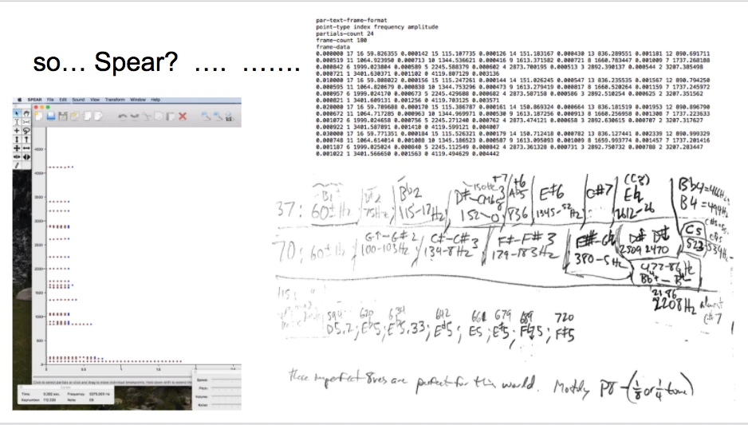
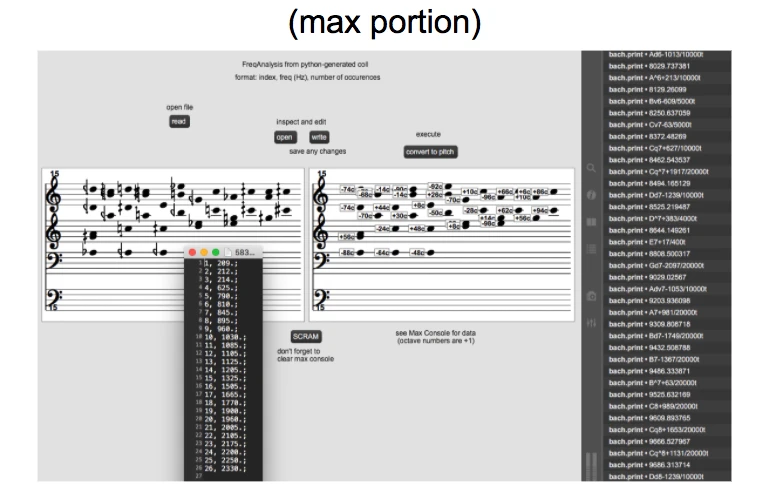
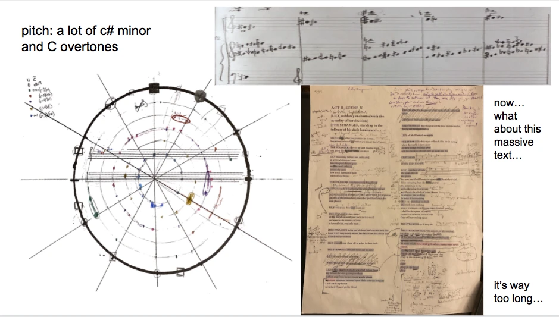
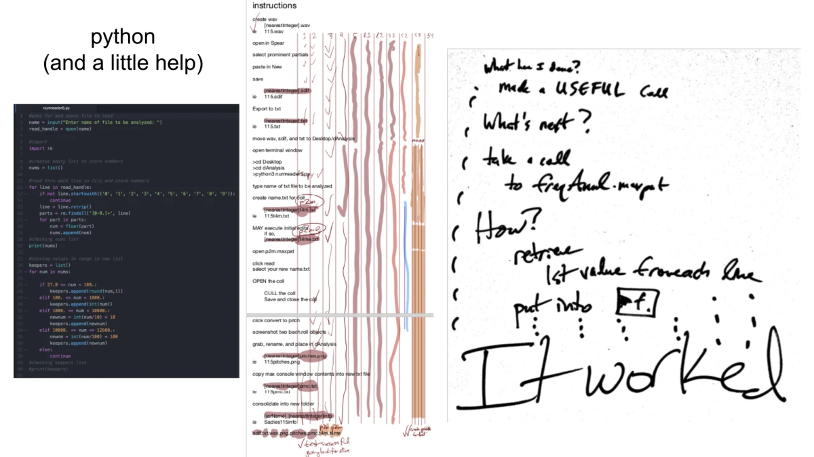
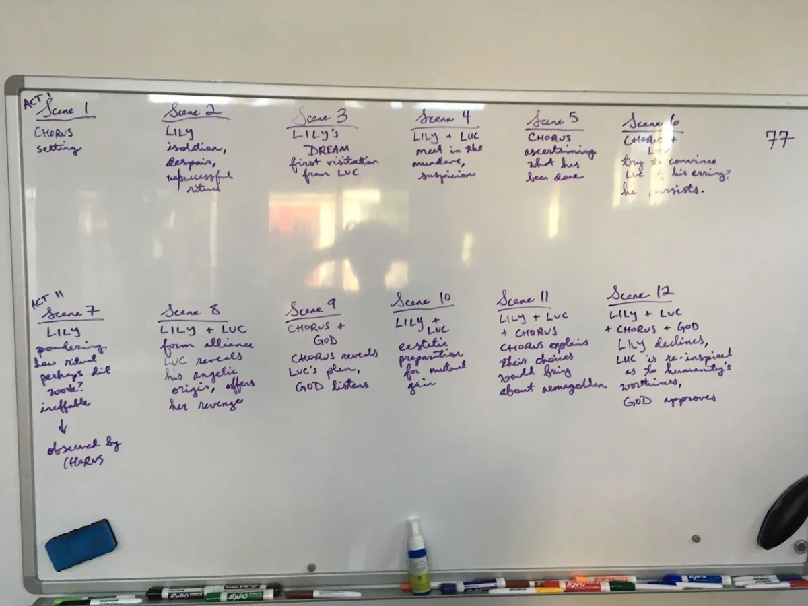
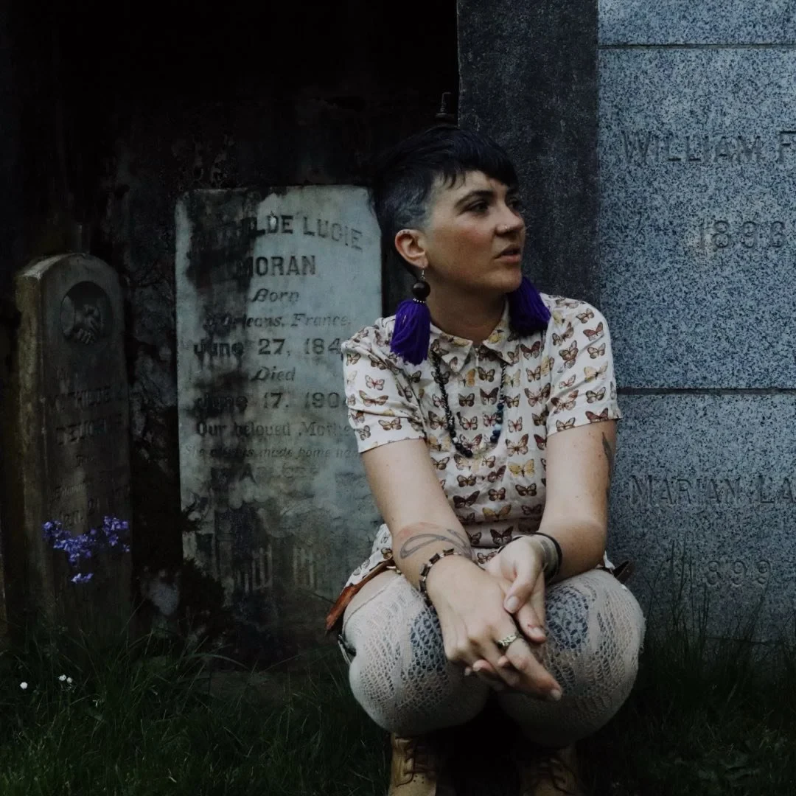
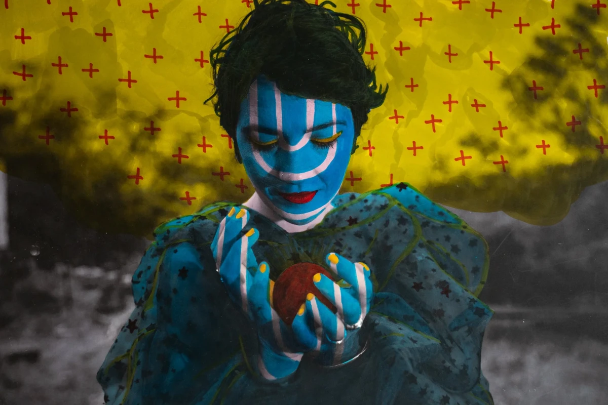

annunciation
2021 · soprano, baritone, chorus, chamber ensemble, electronics · ~16'
two operatic scenes · libretto by Olivia Pepper · music by David Carlton Adams
CW* sexual assault and violence
synopsis
Lily has been wronged, sought justice, and been denied. At the end of her rope, she turns to a book of spells. At first she believes she has been unsuccessful, until a Stranger appears claiming to be able to offer her vengeance…
program note
Working quickly under the guidance of Garnett Bruce, Tony Arnold, and Oscar Bettison, Olivia and I wrote these two scenes, working closely with singers SoJung Lim and Joshua Scheid. I tailored the vocal writing to the strengths of our collaborators. We had a blast.
Working quickly under the guidance of Tony Arnold and Oscar Bettison, I wrote these two scenes beginning February 2021 for recording in April. The quality of this recording is a testament to the dedication of everyone involved.
The pitch material is inspired by glass, struck and then shattered. As is the case for moments of trauma, the moment of breaking tears through time, shards ever present, shards tearing through, permeating the experience of the survivor, and now, the listener.
deriving the pitch material
Striking and then shattering 5 jars.
I took slices of the large wav file of striking and shattering events into Spear for analysis. Spear exports a lot of data, which required another program to sort through it, which I co-wrote with a friend in Python to generate a txt file that would be useful in Max as a “coll” object.
In Max, I repurposed some code from some Bach objects (never-ending thanks to Daniele Ghisi for all his interesting work), and spat those pitches out onto a super-grand staff.



I then took the prominent pitches from each jar, writing out “scales” on staff paper and a spiderweb diagram to consolidate and visualize the pitch material from each jar (12 = C, 1 = C#, etc.)
Recording the jars, running the recordings through Spear, exporting data files, designing a little program in Python, co-writing and then refining it, writing the Max Patch, and using all this to generate the files I needed (two for each of the 5 jars), all told, took about a week.
That C# minor maintained a strong presence through the shattering was not surprising; that C and its overtones were well represented was more so.
Given that I had only 2 or 3 week remaining to generate a PV score and that student musicians would have to perform the work with little rehearsal, I decided that these scenes would be mostly anchored in twelve-tone equal temperament, with the microtonal pitches adding color. Should the full opera be produced, there will be scenes wherein this is not the case.


the rest of the story
We would be thrilled to find a way to bring the rest of this story into being and to share it with the world. Please reach out with any inquiries.
Olivia Pepper, librettist

Olivia Pepper (any pronouns) is a writer, theorist and nondenominational artist who currently resides in rural New Mexico.
Olivia has dabbled abundantly in life and has been at times a film producer, a medicinal herb farmer, an astrologer, a journalist, a labor organizer, a theatre teacher, a line cook, and all kinds of other things.
Mostly, though, Olivia is a collection of exhausted cells, weary bones, good stories, bad jokes and oddly sentimental pieces of pop culture trivia, mostly about Star Trek or queer poets of the 1920s.
This collaboration with David is Olivia’s first foray into the world of opera, but it hopefully won’t be the last.

Olivia and I first met in 2009 in Austin, TX. Our first collaboration premiered in 2016 as part of the Fresh Squeezed Ounce of Art Song concert produced by One Ounce Opera. (I recommend “i. twisting your fingers” and “iii. as you wait”.)
premiere
2021-10-08 · hybrid performance (recorded and live)
cast
SoJung Lim — Lily, a young woman who has known trauma · Joshua Scheid — The Stranger, a mysterious figure, summoned by Lily · Mira Huang, Anna Carolina Peleas, and Maddi Ohrbach — Vox Angeli, lesser angels, empathetic, and growing increasingly alarmed
ensemble
Kirkland Moranos, flute · Mika Judge, horn in F · Guhan Peng, piano · Mae Bariff, violin · Brian Anderson, viola · David Carlton Adams, electric guitars and electronics (added in post) · Eion Lyons, contrabass
credits
Directed by Garnett Bruce · conducted by Sam Hollister · mixed by David Carlton Adams · mastered by David Sexton